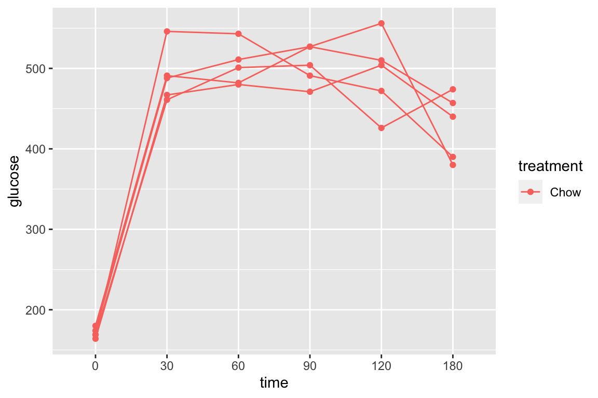

Chapter 9 A linear model with a single, categorical X
9.1 A linear model with a single, categorical X is the engine behind a single factor (one-way) ANOVA and a t-test is a special case of this model.
To introduce modeling with a single, categorical \(X\) variable, I’ll use the vole data from
- Source: Dryad Digital Repository. https://doi.org/10.5061/dryad.31cc4/1
- File: “RSBL-2013-0432 vole data.xlsx”
- Sheet: “COLD VOLES LIFESPAN”
Normal cellular metabolism creates reactive oxygen species (ROS) that can disrupt cell function and potentially cause cell damage. Anti-oxidants are molecules that bind ROS, inhibiting their ability to disrupt cell activity. A working hypothesis for many years is that supplemental anti-oxidants should improve cell function and, scaling up, whole-animal function (such as lifespan). The vole data explores this with supplemental Vitamins C and E, which are anti-oxidants, in the diet of the short-tailed field vole (Microtus agrestis).
The goal of the study is to measure the effect of anti-oxidants on lifespan. The researchers randomly assigned the voles to one of thre treatment levels: “control”, “vitamin E”, and “vitamin C”. The variable \(treatment\), is a single, categorical \(X\) variable. Categorical variables are often called factors and the treatment levels are often called factor levels. There are no units to a categorical \(X\) variable (even though a certain amount of each anti-oxidant was supplemented). The response (\(Y\)) is \(lifespan\) measured in days.
The linear model with a categorical \(X\) variable with three levels is not immediately obvious, and so I don’t present the model until after showing the table of model coefficients
9.1.1 Table of model coefficients
Here is the table of coefficients from the linear model fit
| Estimate | Std. Error | t value | Pr(>|t|) | |
|---|---|---|---|---|
| (Intercept) | 503.4 | 27.4 | 18.4 | 0.000 |
| treatmentvitamin_E | -89.9 | 52.5 | -1.7 | 0.090 |
| treatmentvitamin_C | -115.1 | 54.5 | -2.1 | 0.037 |
The table has estimates for three parameters. The first estimate (the intercept) is the mean response in the reference level. Here the reference level is the “control” group. The additional estimates are the differences in the mean between each of the other treatment levels and the reference level. These are the “effects” in the model. So typically with categorical \(X\), when we speak of an we mean a difference in means. These estimates and their meaning are illustrated in Figure 9.1.
(note. The default in R is to set the level that is first alphabetically as the reference level. In the vole data, “control” comes before “vitamin_E” and “vitamin_C” alphabetically, and so by default, it is the reference level. This makes sense for these data – we want to compare the lifespan of the vitamins E and C groups to that of the control group. The reference level can be changed of course.)

Figure 9.1: What the coefficients of a linear model with a single categorical X mean. The means of the three treatment levels for the vole data are shown with the filled circles. The length of the double-headed arrows are differences in means. The intercept (\(b_0\)) is the mean of the reference treatment level. The coefficients (\(b_1\) and \(b_2\)) are the differences between the treatment level’s mean and the reference mean. As with a linear model with a continuous X, the coefficients are effects.
9.1.2 The linear model
We can see an immediate difference between the coefficient table for a linear model fit to a single, categorical \(X\) and that for a single, continuous \(X\). For the latter, there is a single coefficient for \(X\). For the former, there is a coefficient for each level of the categorical \(X\) except the “reference” level.
The linear model for a single, continuous \(X\) with three factor levels is
\[\begin{equation} lifespan = \beta_0 + \beta_1 vitamin\_E + \beta_2 vitamin\_C + \varepsilon \end{equation}\]and the estimates in the coefficient table are the coefficients of the fit model
\[\begin{equation} lifespan_i = b_0 + b_1 vitamin\_E + b_2 vitamin\_C + e_i \tag{9.1} \end{equation}\]Remember, \(b_0\) is the mean of the control group, \(b_1\) is the difference in means between the vitamin E and control groups, and \(b_2\) is the difference in means between the vitamin C and control groups (Figure 9.1).
In this model, \(vitamin\_E\) and \(vitamin\_C\) are dummy variables that contain a one, if the data is from that treatment level, and zero otherwise. This is called dummy coding or treatment coding. The lm function creates these dummy variables under the table, in something called the model matrix, which we’ll cover in the next chapter. You won’t see these columns in your data. But if you did, it would look something like this
| lifespan | treatment | vitamin_E | vitamin_C |
|---|---|---|---|
| 621 | control | 0 | 0 |
| 865 | control | 0 | 0 |
| 583 | vitamin_E | 1 | 0 |
| 561 | vitamin_E | 1 | 0 |
| 315 | vitamin_C | 0 | 1 |
| 157 | vitamin_C | 0 | 1 |
There are alternative coding methods. Dummy coding is the default in R. Note that the method of coding can make a difference in an ANOVA table, and many published papers using R have published incorrect interpretations of ANOVA table outputs. This is both getting ahead of ourselves and somewhat moot, because I don’t advocate publishing ANOVA tables.
9.1.2.1 Some math to convince you that the intercept of a linear model with a categorical \(X\) is the mean of the reference group and the intercept of a line. And some math to convince you that the coefficient of a dummy variable in a linear model with a categorial \(X\) is a difference in means and a slope.
The interecept of a model is the value of the model when all \(X\)-variables are set to zero. The \(X\) variables in the model (Equation (9.1)) are the dummy variables \(vitamin\_E\) and \(vitamin\_C\). If we set vitamin_E$ and \(vitamin\_C\) in Equation (9.1) to zero, the modeled (or expected) value reduces to
\[\begin{equation} \mathrm{E}(lifespan|X_1=0, X_2=0) = b_0 \end{equation}\]% Since both dummy variables are set to zero, we have modeled the expected value or mean of the control group.
The slope of a model is the difference in the modeled value given a one unit increase in \(X\). If we increase the dummy variable \(vitamin\_E\) from zero to one (that is, if we are modeling the expected value of the vitamin E group), we get
\[\begin{equation} \mathrm{E}(lifespan|X_1=1, X_2=0) = b_0 + b_1 \end{equation}\]which can be re-arranged to
\[\begin{equation} b_1 = \mathrm{E}(lifespan|X_1=1, X_2=0) - b_0 \end{equation}\]and since \(\mathrm{E}(lifespan|X_1=0, X_2=0) = b_0\) then
\[\begin{equation} b_1 = \mathrm{E}(lifespan|X_1=1, X_2=0) - \mathrm{E}(lifespan|X_1=0, X_2=0) \end{equation}\]or, the coefficient of vitamin E is the difference in means between the vitamin E and control groups, which is also a slope since this is the expected difference given a one unit increase in \(vitamin\_E\).
9.1.3 Reporting results
What should be reported for the analyis of effects of anti-oxidant supplements on vole lifespan? Best practice includes reporting the raw data with a summary distribution and treatment effects with CIs. “Raw data” means the individual lifespans as a function of treatment level.
9.1.3.1 Harrell Plot of the data
Figure 9.2: HarrellPlot of the raw data, distribution, and effects of the vole lifespan data.
The raw data, the distributions within treatment level, and the effects (difference in means) of treatment can be combined into a single plot that I call a Harrell plot (Figure ??). Notice that the x-axis and y axes are flipped so that \(lifespan\) is on the x-axis. It is still the “response” or “Y” variable! The Harrell plot contains two parts
- The bottom contains a strip chart (often called a “dot plot”) of the raw response measures grouped by factor level. Superimposed over the strip chart is a box plot summarizing the distribution of each factor level. The line in the center of a box is the median \(lifespan\) for that group, the left and right edges of the box are the 25% and 75% quantiles of \(lifespan\) for that grop, and the lines extending to the left and right of the box are the “whiskers”, which are the smallest and largest value within \(1.5 IQR\) (inter-quartile range, which is the interval bounded by box).
- The top is a forest plot of the effects and the 95% CI of the effects. For categorical \(X\), the effects could be model coefficients or treatment contrasts, which are differences in means between treatment levels. Model coefficients are a subset of possible treatment contrasts.
The Harrell plot above shows the effects as model coefficients, which (again!) are differences between the mean of the response in a specific treatment level and the mean of the response in a reference level. Here the reference level is the control group.
9.1.3.2 In-text reporting
“The mean lifespan of cold-reared voles supplmented with vitamin E was -89.9 days shorter than the mean lifespan for the control group (95% CI: -194.1, 14.3). The mean lifespan of cold-reared voles supplmented with vitamin C was -115.1 days shorter than the mean lifespan for the control group (95% CI: -223.2, -6.9).
9.1.3.3 Correct interpretation of the Confidence Interval is key
Remember, that the CI contains the range of parameter values that are consistent with the data (in the sense that a t-test wouldn’t reject the hypothesis test). This means that a true value at the low end or the high end of the CI is consistent with the data. Your technical report/manuscript should discuss the consequences of this. For example, A small, increase in lifespan is consistant with the Vitamin E but not Vitamin C supplementation, if we use the 95% CI as a pretty good range for inferring “consistent with”. Both a 223 day and a 7 day decrease in lifespan are consistant with the Vitamin C effect. 223 days seems like a huge effect, especially for a short lived vole. 7 days is certainly a much smaller effect, but this doesn’t mean that it doesn’t have important ecological, behavioral, or fitness consequences.
9.2 Working in R
9.2.1 Exploring the relationship between Y and X
Questions
- Import the vole data from the Dryad repository as the data.table
vole_wide. Replace the spaces in the column labels with the underscore “_“.
The data are in “wide” format. A pretty good script for for converting these to long format is
vole_long <- melt(vole_wide, measure.vars=c("control", "vitamin_E", "vitamin_C"), variable.name="treatment")
vole <- na.omit(vole_long)
# melt is from reshape2 package and is a workhorse in R
# the resulting data frame has 3 stacked copies of the same rows
# na.omit removes the superfluous two extra sets of rows created by melt
# the more compact way to do this is combine the steps:
# vole <- na.omit(melt(vole_wide, measure.vars=c("control", "vitamin_E", "vitamin_C"))
# but I suggest two steps so you can see what melt does. This isn't the best example of using melt.Use the ggpubr package to create a box plot, grouped by treatment, with superimposed strip chart (“dots”)
Questions
- Do the response as a function of group look fairly normally distributed or are there red flags such as skewness, outliers, bimodal clusters, etc.
- Is the direction of the effect consistent with the expected direction?
9.2.2 Fitting the model
As with a single, continuous \(X\), we fit the model using the lm function and with the model formula of the form y ~ x. Note that the R formula can use the single categorical variable \(treatment\). The code underneath lm will note that \(treatment\) is a factor with three levels and will automatically create the two dummy variables noted above in the linear model.
fit <- lm(lifespan ~ treatment, data=vole)All of the same scripts to access the information in fit that we used with the continuous \(X\) analysis are the same. For example, the base R summary function gives the same information as in the continuous \(X\) example.
Questions
- Review different output in the
summaryfunction and list which are useful and which are not so useful and why.
Other useful functions on the lm object (“fit”) are coefficients(summary()), coef() or coefficients() and confint. Assigning the output of these functions to an R object allows you to increase reproducibility. For example, if I assign the coefficients to b
b <- coef(fit)then I can report these in R markdown text by embedding r code directly in the text. For example, if I embed “r round(b[“treatmentvitamin_E”], 1)” between a pair of single accent characters, then r markdown inserts -89.9 into the rendered text.
9.2.3 An introduction to contrasts
We often want to compare more than just the non-reference levels to the reference level. For example, we might want to compare the effects of the vitamin E supplementation to vitamin C supplementation. Or, we might want to combine (or “pool”) vitamin C and vitamin E levels effects into a single “anti-oxidant” level and compare to the control. These comparisons of means are called linear contrasts. The emmeans package is a good package for obtaining contrasts for both simple linear models computed with lm and for more complicated statistical models. If you haven’t already, download the emmeans package.
fit.em <- emmeans(fit, spec="treatment")
fit.em## treatment emmean SE df lower.CL upper.CL
## control 503 27.4 93 449 558
## vitamin_E 413 44.8 93 325 502
## vitamin_C 388 47.1 93 295 482
##
## Confidence level used: 0.95The emmeans() function returns various estimated means, depending on what is specified with the spec= parameter. Here the grouping variable “treatment” is specified, so the means returned are estimates of \(\mathrm{E}(lifespan | treatment)\), the modeled means for each level of treatment. For this simple analysis, the modeled means are simply the group means. Note that the default value returned is a table with the standard error and 95% confidence limits of the estimates.
Let’s use the emmeans object to get the contrasts for all combinations of treatment levels.
summary(contrast(fit.em, method="revpairwise", adjust="none"), infer=c(TRUE, TRUE))## contrast estimate SE df lower.CL upper.CL t.ratio p.value
## vitamin_E - control -89.9 52.5 93 -194 14.31 -1.713 0.0900
## vitamin_C - control -115.1 54.5 93 -223 -6.93 -2.113 0.0373
## vitamin_C - vitamin_E -25.2 64.9 93 -154 103.81 -0.387 0.6993
##
## Confidence level used: 0.95I’ve sent to parameters to the contrast function and one to the summary function
- method=“revpairwise”.
contrastcan create different combinations of differences between means. Here I’ve specified all pairwise differences (the “rev” reverses the order of the subtraction). Notice that the statistics (estimate, SE, etc) are equal to the same statistics for \(b_1\) and \(b_2\) of the linear model. I said earlier that these coefficients are contrasts! - adjust=“none”. In classical frequentist hypothesis testing, the p-value of a contrast in what are called “post-hoc tests” is adjusted to reflect “multiple testing” (more than one p-value is being computed). This adjustment is almost standard in biology, but the practice is hugely controversial. The concept of multiple testing is important, and we will return to this in a future chapter, but here I have chosen to show the unadjusted p-value. The reason is that I want the unadjusted confidence interval and the adjustment would adjust these as well. If deleted
adjust="none"from the script, the contrast function would default to the Tukey HSD (Honestly Significant Difference) test. There are literally dozens and dozens of post-hoc tests, which largely reflects the misplaced emphasis on “better” \(p\)-values rather than parameter estimates and their uncertainty. - infer=c(TRUE, TRUE). This parameter controls what kind of inference to put in the table. The first value specifies the inclusion of the CI (emmeans uses “CL” for confidence limit), the second value specifies the inclusion of \(t\) and \(p\)-values.
9.2.4 Harrell plot
9.2.4.1 Installing the harrellplot package
The harrellplot package is available on github but not a cran repository and, therefore, takes a little more work to install. To install a package from a github repository, 1. load library(devtools) – this may need to be installed first using the R Studio Tools > Install Packages… tool 2. install harrellplot from github. In the console, type
install_github("middleprofessor/harrellplot")
- load the harrellplot package
- harrellplot requires other packages including broom, Hmisc, car, lme4, and lmerTest. If you haven’t installed these do. load these with the library() function at the start of your notebook.
9.2.4.2 Using harrellplot to make a nice, publishable plot of treatment effects
In the console type `?harrellplot to see the many parameters. Unlike ggplot2, variable names need to be specified with quotes in the harrellplot function. The harrellplot function is a list with several elements.
Here is the default plot
vole.harrellplot <- harrellplot(x="treatment", y="lifespan", data=vole)
vole.harrellplot$gg # gg is the plot object